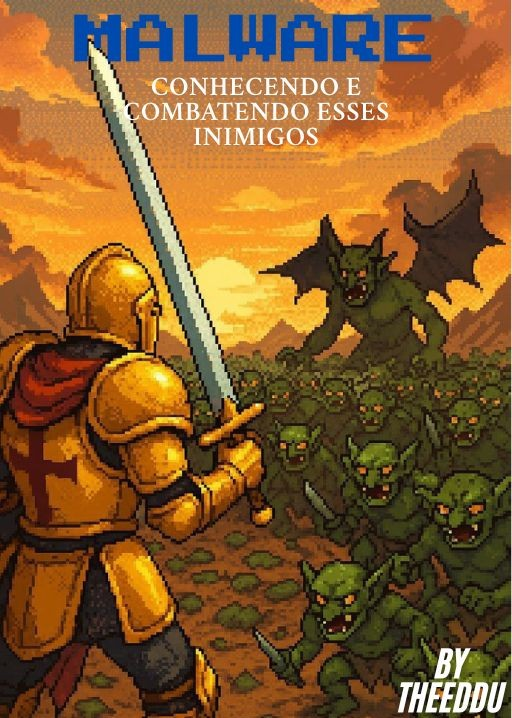

Segurança da Informação: O Grimório do Cyber Aventureiro
Um eBook prático e direto, com linguagem simples voltada para o público administrativo de empresas. Explica ataques, como evitá-los e conceitos de Segurança da Informação.
Ver no GitHub →Um eBook prático e direto, com linguagem simples voltada para o público administrativo de empresas. Explica ataques, como evitá-los e conceitos de Segurança da Informação.
Ver no GitHub →Importância das senhas fortes e ataques possíveis, acompanhado de um projeto prático de um gerador de senhas seguras.
Ver no GitHub →
Apresentação de diversos tipos de malware, como eles funcionam e como se proteger.
Ver no GitHub →O que é Kaizen e como aplicar essa filosofia no dia a dia, tanto na vida pessoal quanto profissional.
Ver no GitHub →
Como o modo anônimo funciona e será que ele realmente é anônimo? O que acontece com os dados do usuário quando ele navega na internet usando esse modo?
Ver no GitHub →O que fazer quando o ataque não é digital, mas mental?
Ver no GitHub →Para artigos completos e organizados, visite meu site pessoal:
Acessar site de artigosSe por algum motivo acontecer um erro e os eBooks não forem exibidos, o conteúdo está disponível em forma de artigo nesse link.